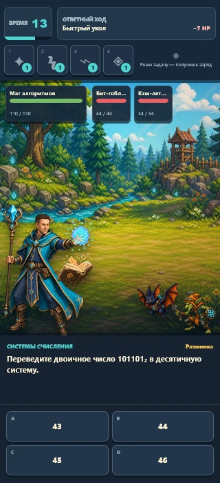
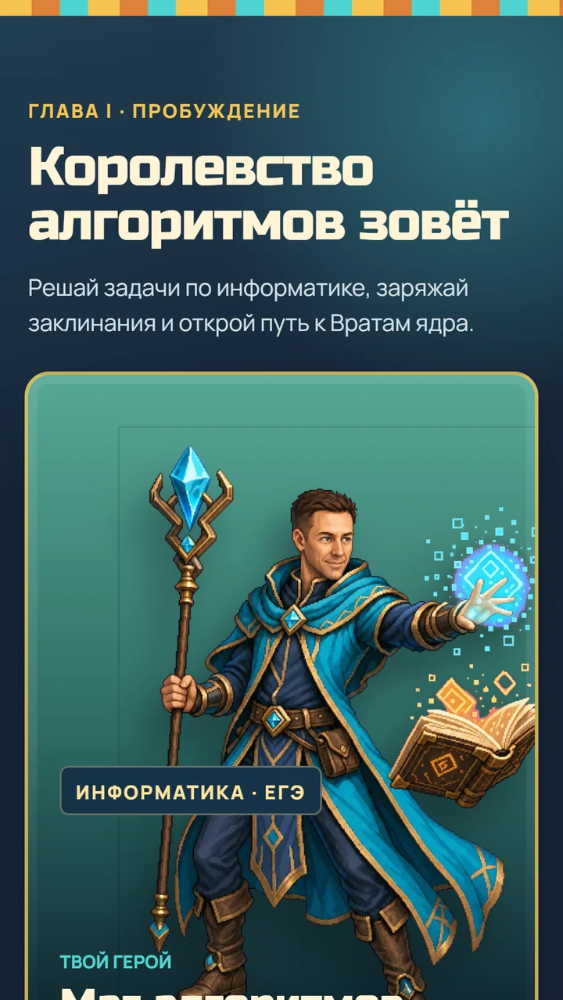
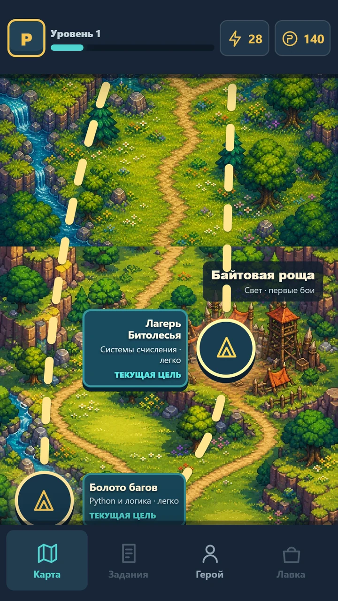
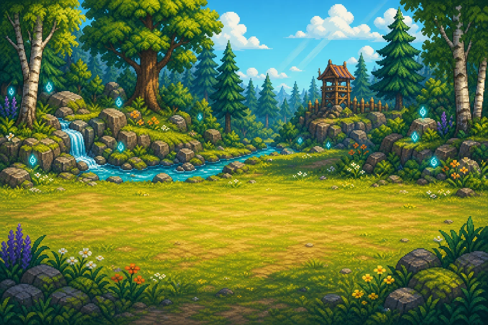
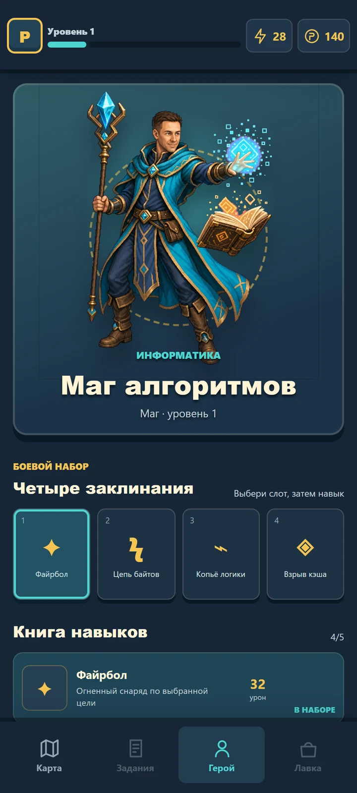
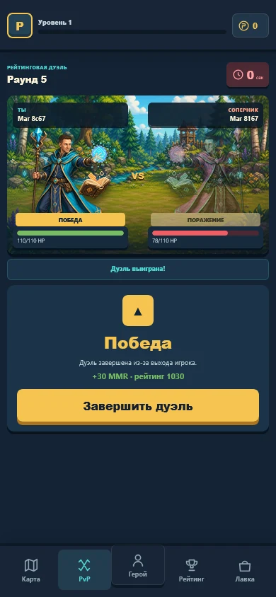
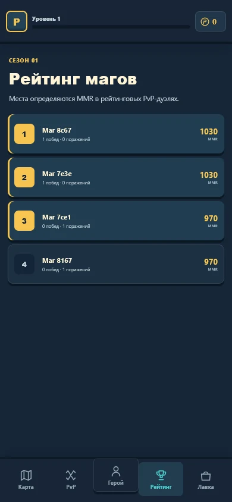
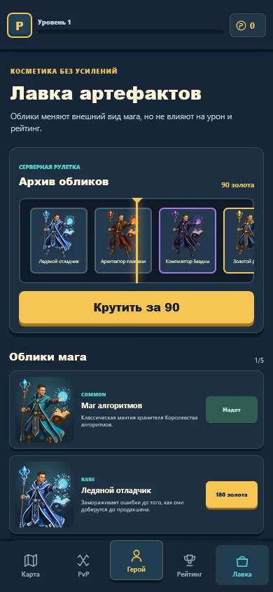

Правильный ответ заканчивает действие.
Telegram Mini App · EdTech RPG
ProfiMatika
Подготовка к ЕГЭ, которая ощущается как приключение.
Ученик исследует фэнтезийный мир, решает задачи по информатике под давлением времени, заряжает навыки правильными ответами и побеждает противников тактикой, а не случайностью.
- Vue 3
- TypeScript
- FastAPI
- PostgreSQL
- WebSocket



Карта кампании
Боевая система
PvP-арена
Прогресс и навыки
Задача продукта
Не ещё один банк задач.
Повторение помогает запомнить материал. Экзамен требует действовать быстро, выбирать под давлением и возвращаться к подготовке каждый день.
Знание продолжает действие и меняет исход боя.
Один учебный цикл.
Четыре игровых решения.
Карта задаёт цель, таймер создаёт честное давление, бой превращает ответ в действие, а прогресс даёт причину вернуться.
-
1
Выбрать маршрут
Исследовать мир и открыть нужную тему.
-
2
Решить задачу
Ответить до серверного дедлайна.
-
3
Применить навык
Выбрать заклинание и живую цель.
-
4
Усилить героя
Получить опыт, золото и новый навык.
Карта — это выбор
Мир ветвится вместе с подготовкой.
Каждый узел привязан к нарисованному месту: лагерю, пещере, данжу или логову босса. Две развилки дают выбрать тему и противника, а затем сходятся в общей точке кампании.
- Пять связанных биомов
- Повторяемые лагеря для практики
- Данжи, боссы и открываемые навыки
Ядро продукта
Знание превращается в силу.

01
Серверный таймер
Интерфейс показывает время, но дедлайн определяет backend.
02
Ответ заряжает навык
Правильное решение открывает тактический ход героя.
03
Ошибка имеет цену
Враг заранее показывает ответный ход и возможный штраф.
Прогресс не заканчивается после боя.
Сборка героя, PvP, рейтинг и косметическая лавка формируют продуктовый слой вокруг учебного ядра — без pay-to-win и случайной подмены результата.




Под интерфейсом
Игра остаётся честной, потому что сервер решает исход.
Клиент отвечает за ощущение боя. Сервер — за правила: правильность ответа, дедлайн, урон, награды, инвентарь, прогресс и рейтинг.
Вход
Telegram Mini App
Подписанные initData и знакомый мобильный сценарий.
Интерфейс
Vue 3 + TypeScript
Карта, бой, сборка героя и состояния кампании.
Правила
FastAPI + WebSocket
Авторитетный PvE/PvP-контур и валидация команд.
Память
PostgreSQL
Прогресс, экономика, навыки и рейтинг.
Версионирование состояния защищает бой от повторных команд.
WebSocket-рамки проходят строгую проверку и rate limit.
Контент задач отделён от боевого движка и интерфейса.
ProfiMatika